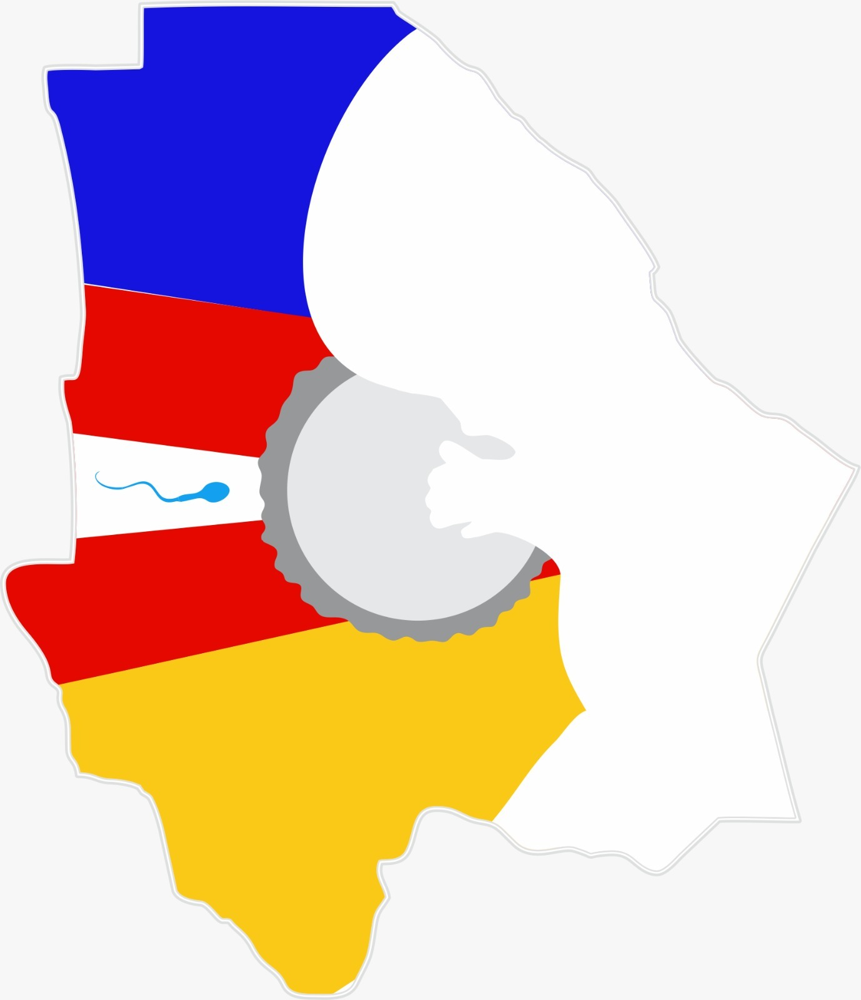

La embriología es el estudio del desarrollo...
La producción y maduración inicial de los espermatozoides dependen de una compleja arquitectura microscópica dentro del testículo. Entre sus estructuras esenciales, la red seminífera o rete testis ocupa un papel crucial como nexo funcional entre la espermatogénesis que ocurre en los túbulos seminíferos y las etapas posteriores de maduración en el epidídimo. Su importancia va más allá del simple transporte: representa un sistema de transición, filtración y acondicionamiento indispensable para la viabilidad espermática. El testículo se organiza en lobulillos delimitados por septos conectivos derivados de la túnica albugínea. Dentro de cada lobulillo se encuentran los túbulos seminíferos, lugar exclusivo donde se lleva a cabo la espermatogénesis. Estos túbulos, que albergan a las células germinales y a las células de Sertoli, convergen hacia estructuras más simples llamadas túbulos rectos, las cuales representan la salida directa del sistema productor de espermatozoides. Los túbulos rectos presentan una característica histológica distintiva: carecen de células germinales y están revestidos únicamente por células de Sertoli en su porción inicial, lo que marca la transición hacia conductos de naturaleza más conductiva que secretora. Los túbulos rectos desembocan en la red seminífera, localizada en el mediastino testicular, una región condensada de tejido conectivo dentro del testículo. Esta red está constituida por una malla de conductos interconectados revestidos por epitelio simple cúbico, el cual presenta microvellosidades y, ocasionalmente, cilios cortos. Tales características son fundamentales para facilitar el movimiento pasivo del fluido testicular y para crear un entorno fisiológico estable que preserve la integridad de los espermatozoides recién formados. En esta región los espermatozoides aún no tienen movilidad propia, por lo que dependen completamente del flujo de líquido secretado por las células de Sertoli y de la absorción progresiva de este fluido para concentrarlos adecuadamente. La función principal de la red seminífera es, por tanto, transportar, filtrar y comenzar a concentrar a los espermatozoides antes de que ingresen a los conductos eferentes, los cuales constituyen la vía de salida hacia el epidídimo. En estos conductos, revestidos por un epitelio pseudoestratificado con células ciliadas y no ciliadas, se absorbe hasta el 90% del líquido proveniente del testículo, una acción fundamental para incrementar la concentración espermática y regular su microambiente. La coordinación entre la rete testis y los conductos eferentes garantiza que los espermatozoides ingresen al epidídimo en condiciones óptimas para la maduración posterior. La relevancia fisiológica de la red seminífera se basa no solo en su papel como vía de tránsito, sino también en su contribución al mantenimiento de la homeostasis testicular. Cualquier alteración en su estructura —como obstrucciones congénitas, alteraciones inflamatorias o fibrosis del mediastino— puede comprometer la salida de los espermatozoides, causando oligozoospermia o azoospermia obstructiva. Desde la perspectiva clínica, esto subraya su importancia en el diagnóstico de la infertilidad masculina. Finalmente, desde el punto de vista embriológico, la red seminífera es un remanente funcional de la red canalicular formada durante el desarrollo del sistema genital masculino, donde los cordones sexuales originan los túbulos seminíferos y posteriormente se continúan con la rete testis. Este origen común explica la disposición conectiva y la continuidad anatómica de todo el sistema de conductos intratesticulares. En conclusión, la red seminífera es una estructura esencial en el sistema reproductor masculino, no sólo como vía de transporte sino como modulador del microambiente inicial de los espermatozoides. Su arquitectura, funciones y relación con las estructuras vecinas demuestran que la fertilidad masculina depende de procesos complejos y finamente regulados en cada etapa del trayecto espermático. Estudiarla permite entender con mayor profundidad la fisiología testicular, la patología de la infertilidad y la coherencia del desarrollo embriológico del aparato reproductor. REFERENCIAS ● Moore, K. L., Persaud, T. V. N., & Torchia, M. G. (2019). Embriología Clínica (10.ª ed.). Elsevier. ● Sadler, T. W. (2019). Langman: Embriología Médica (14.ª ed.). Wolters Kluwer. ● Larsen, W. J. (2017). Embriología Humana (5.ª ed.). Elsevier. ● Junqueira, L. C., & Carneiro, J. (2017). Histología Básica (14.ª ed.). McGraw-Hill. ● Gartner, L. P., & Hiatt, J. L. (2018). Histología en Medicina (5.ª ed.). Wolters Kluwer. ● Drake, R. L., Vogl, A. W., & Mitchell, A. W. M. (2019). Gray. Anatomía para Estudiantes (4.ª ed.). Elsevier. ● Tortora, G. J., & Derrickson, B. (2017). Principios de Anatomía y Fisiología (15.ª ed.). Wiley. ● Guyton, A. C., & Hall, J. E. (2021). Tratado de Fisiología Médica (14.ª ed.). Elsevier. ● Wein, A. J., Kavoussi, L. R., Partin, A. W., Peters, C. A. (2016). Campbell-Walsh Urología (11.ª ed.). Elsevier.
Salir